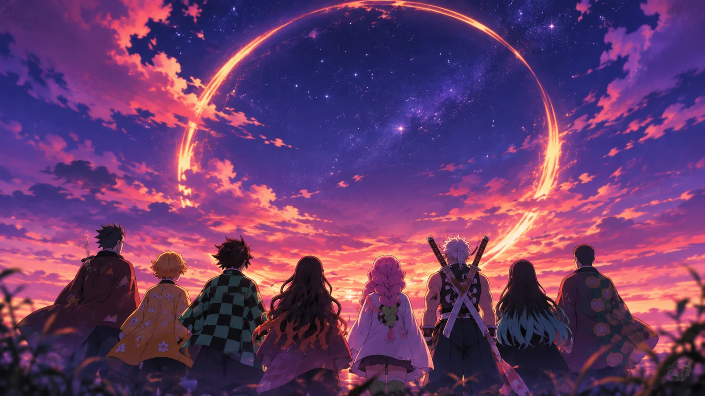
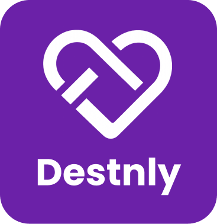
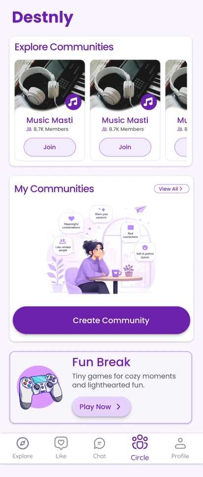
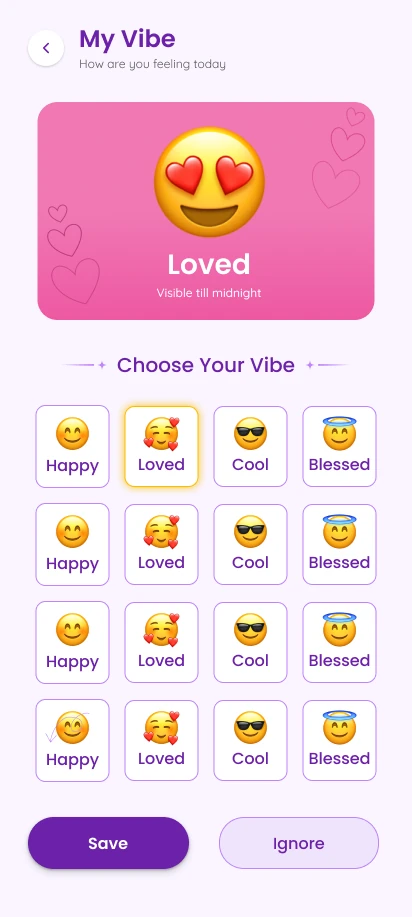

01 / FANDOM
Anime Fan Club
For theories, favourite characters and the next episode.

Destnly Get the appFind a Circle for the things you love. Join the conversation. Meet people who just get it.

Maybe it’s someone who loves your music. Maybe it’s someone who understands your mood. The best connections begin with something real.
See how Destnly brings you closer ↗There’s something different about meeting someone when you already have something to talk about. That’s what Circles are for: the fandoms, interests and little obsessions that bring us together.
Meet the Circles ↗Anime, music, books, and the interests that make you, you. Your next favourite conversation starts here.
Posts, questions and polls make it easy to join in without awkward introductions.
Daily icebreakers turn small thoughts into unexpectedly good conversations.
Find people with similar energy. Like, Buzz and chat when the feeling is mutual.
Find people who care about the same things. A favourite show, a good book, a song you can't stop playing.

For theories, favourite characters and the next episode.
One more chapter. One more conversation.
Share what you're listening to, and find your people.
Every Circle has room to say something, ask something, or just join in. Explore the ways people connect.
Pick something you genuinely enjoy. Join a community, or create your own.
Reply to a post, answer an icebreaker, vote in a poll or join the chat.
Make new friends, find common ground, and explore a connection at your pace.
The best connections don’t begin with a perfect opening line. They begin with something real.
50,000+ downloads
More people. More possibilities. More stories waiting to begin.
Read our storyFriendships, shared interests, a spark you didn’t expect. Destnly brings social discovery and dating together — without making every conversation feel like an audition.

Share your vibe for the next 24 hours. Sometimes a mood says more than a bio ever could.
Explore Daily VibeDiscover people through interests, mood and compatibility signals. Explore connections with people in your area, when location is available.
Like someone you’re interested in, or send a Buzz to express that extra spark.
When the interest is mutual, the chat opens. Get to know someone at your own pace.
Be yourself, look out for each other, and stay in control of who you interact with.
Profile verification is available to support more authentic connections.
Tools to report inappropriate behaviour and block unwanted interactions.
Guidelines and moderation help keep Circles welcoming and respectful.